Daniel Šteffl
Designer & Developer
Propojuji grafický design s IT vývojem. Rád se učím nové technologie a vytvářím funkční, přehledné a hezké digitální produkty.

Daniel Šteffl
Propojuji grafický design s IT vývojem. Rád se učím nové technologie a vytvářím funkční, přehledné a hezké digitální produkty.